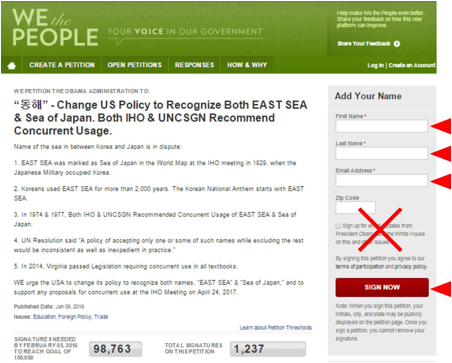
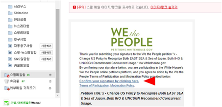

“동해병기”
2017년 IHO "동해병기" 백악관 청원 운동
알고 계십니까?
87년간 잃어버린 우리의 바다 동해
국민 여러분의 서명 동참 요청드립니다.
"동해" - 오바마 정부는 "동해 병기"를 인정할수 있도록 미국의 외교 정책을 바꾸어라. 국제 수로 기구와 유엔에서도 두 바다 이름을 병기 하도록 권고하고 있다.
누구나 동참
할 수
있습니다.
2016년 2월 5일까지 100만명 이상의 서명이 필요합니다.
동참해 주십시오!
백악관 청원
사이트
http://wh.gov/iwXUG
** 잠깐 ** 사이트 들어가기 전에 잠깐 아래 신청 가이드 확인해 주세요.
위 링크를 클릭하시면 우리의 동해
청원 박스가
아래와 같이
나옵니다.

* Zip Code 는 생략 하실 수 있습니다.
* 서명 완료 하시면, 확인용 메일이 발송됩니다. 들어가셔서 Confirm 링크를 클릭해 주셔야 서명이 최종적으로 등록됩니다.
1. 화면 오른쪽에 이름(First Name)과 성(Last Name)을 넣는다. (한글로 이름 적으셔도 됩니다.)
2. 이메일 주소(Email Address)를 적어 넣는다.
3. Zip Code 는 생략하셔도
됩니다.
5. 내 메일함에 "We the People: Your Voic" 제목으로 "이메일 확인용" 메일이 와 있다.
6. 메일
중간쯤 "Cornfirm your signature by clicking here" 를 클릭하면
서명이 완료된다.
네이버 사용자는 스팸메일함에
아래와 같이 이메일이
와있을 수 있으니
주의해 주세요.
